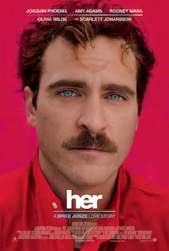

Benjamin Mimran
Alumni @Le Wagon
Huge fan of Louis CK, Sundar Pichai, cherry tomatoes, Daft Punk, theverge.com, 1984, The Kooples, The Leftovers and Bar Refaeli. Founder of Skip The Beat festival, I'm currently a tech savvy and enthusiastic student who aim to change the way we get informations that surround us through computer vision and deep learning.
Check hereMy Favorite Movies
ArrivalSecond attempt with the Sci Fi genre for De Villeneuve, who offers a deep understanding of the way we communicate and how it can alters our vision of the world. Another perfect shot for the canadian Maestro, who will deliver us the second opus of Bladerunner in 2017... Fingers crossed ! |
|
|  |
HerFor his first long-length movie (he is a former director of famous music clips such as Da Funk), Jonze depicts us a near future Los Angeles where Joaquim Phenix falls in love with his AI assistant, interpreted by the sensual voice of Scarlett Johanson. |
Maps To The StarsNarratively unwieldy and tonally jumbled, Maps to the Stars still has enough bite to satisfy David Cronenberg fans in need of a coolly acidic fix. |
About this page
This page had been coded during the " FullStack programm @LeWagon